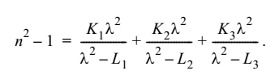

Glass Struct
This struct is used to define the glass object, which contains all informations related with the glass defined.
Number of Properties: XX
Number of Methods: XX
All of the properties defined in the glass class are used for optical system analysis in the toolbox.
Important Methods (Functions)
1. Abbe Number Computation
Syntax:
[abbeNumber] = getAbbeNumber(Glass,wavLenF,wavLenD,wavLenC)
This function returns Abbe number of glass which is computed from the refractive indices of the glass at three different wavelengths using the formula:
abbeNumber = (nd-1)/(nf-nc)
2. Refractive Index Computation
Syntax:
[n] = getRefractiveIndex(Glass,wavLen)
This function returns the refractive index of the glass at any given wavelength using Sellmeir equation.

Note 1: Both functions are vectorized i.e. giving a vector of wavelengths results in a vector of refractive indices or Abbe numbers.
Created with the Personal Edition of HelpNDoc: Produce electronic books easily